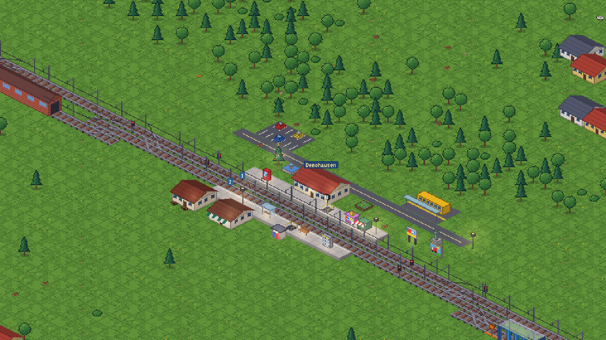
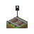
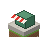
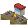
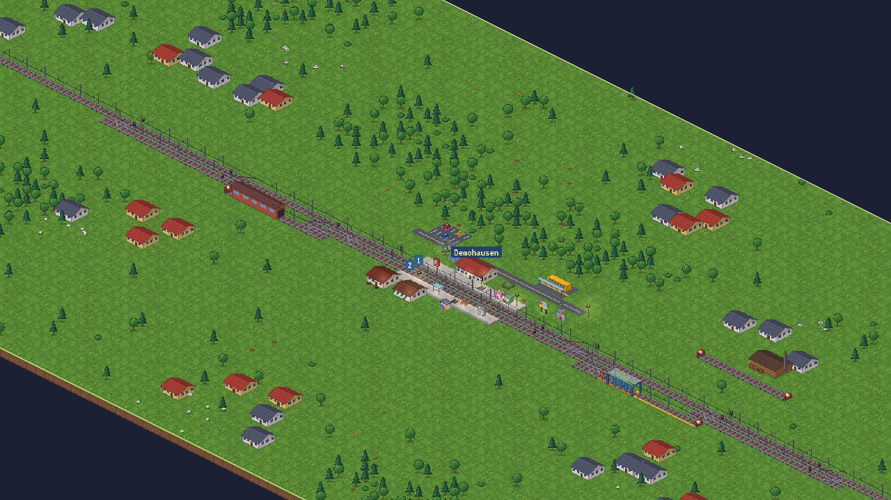

Demohausen um 6 Uhr früh. Die Katze schläft noch, der Kiosk hat schon offen.
Was man so macht

Gleise & Signale
Weichen, Gleiswechsel, Bahnsteige, Fahrdraht. Der Fahrdienstleiter fährt automatisch – Sie sorgen dafür, dass er es kann.
Vom Haltepunkt zum Hauptbahnhof
Ein Schild und eine Bank am Anfang. Uhrturm, Unterführung und vier Bahnsteiggleise am Ende.

Kiosk, Café, Wirtshaus
Wartende kaufen Kaffee. Pünktliche Fahrgäste kaufen weniger Kaffee. Ein Dilemma.

Güter & Rangieren
Abrollberg, Richtungsgleise, Werksanschlüsse. Schwerkraft macht’s.
Wetter & Störungen
Schnee friert Weichen ein, Signale fallen aus. Gut, wenn man Instandhalter mit Thermoskanne hat.
Bahnhofskatze
Erforschbar. Macht alle froher. Nicht verhandelbar.
Stimmen aus der Lokalpresse*
„Nach Jahren hält wieder ein Zug. Ein Pensionist hat aus Rührung den Bahnsteig gekehrt.“
Donau-Kurier„Die Schnellfahrweichen sind in Betrieb. Ein Kamelhändler soll gesagt haben: Das ist unfair.“
Oasen-Bote„Minus zwanzig Grad, und die Weichen frieren. Wer jetzt pünktlich fährt, wird im Ort als Held gefeiert.“
Nordlicht-Zeitung* Zeitungen aus dem Spiel. Echte Kritiken folgen, sobald echte Kritiker pünktlich ankommen.
Sieben Kapitel, sieben Landschaften
Dazu: freies Spiel mit Langzeitzielen, Sandkasten, Zufallskarten, tägliche Herausforderungen und eine Dienstakte voller Stempel.

Fragen, die uns niemand gestellt hat
Kostet die Demo etwas?
Nein. Sie läuft im Browser, ohne Anmeldung, ohne Cookies. Ihr Spielstand bleibt auf Ihrem Gerät und lässt sich in die Vollversion mitnehmen.
Muss ich mich mit Eisenbahn auskennen?
Nein. Das Spiel erklärt alles in einfachen Worten, und das Bahn-ABC hilft bei Wörtern wie „Blockabstand“ oder „Stumpfgleis“.
Kann man Züge entgleisen lassen?
Nein. Der Fahrdienstleiter lässt keine Unfälle zu. Er lässt höchstens Fahrgäste warten. Sehr lange.
Wo läuft das Spiel?
Im Browser (Chrome, Firefox, Safari, Edge) und bald als Desktop-Version auf Steam für Windows und macOS.